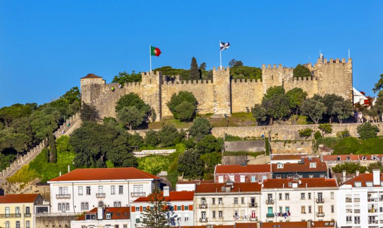
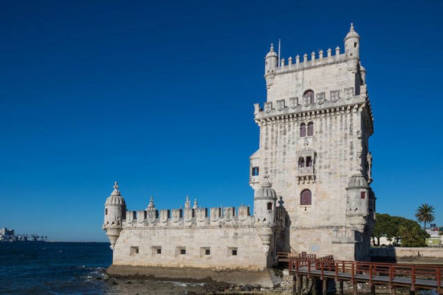
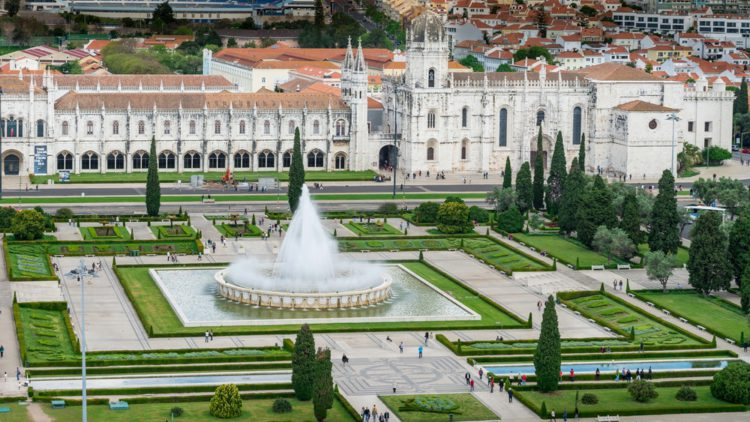
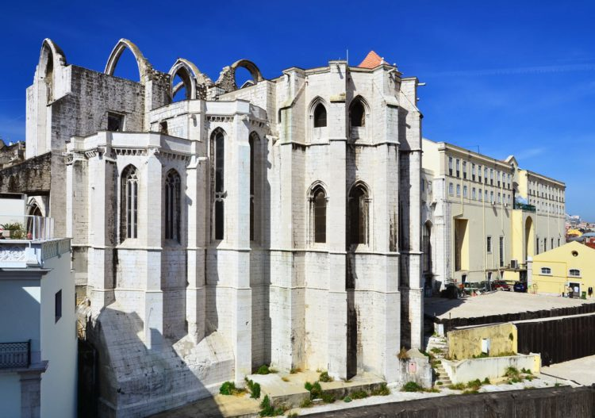
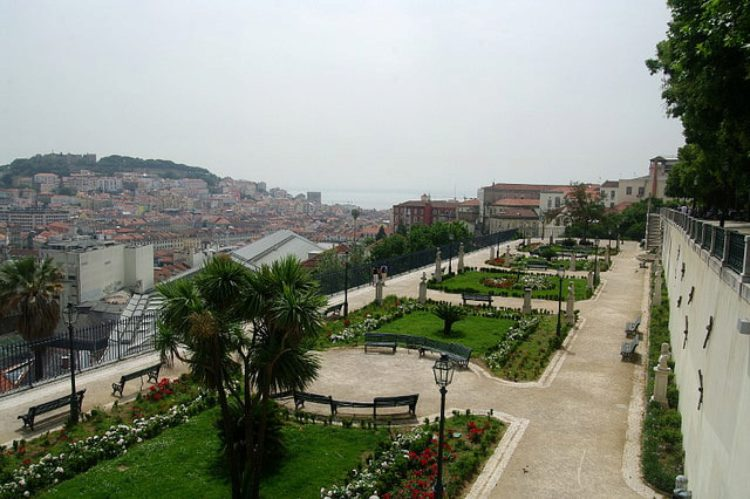

Тур в Лиссабон

Лиссабон расположен на юго-западе Пиренейского полуострова, на побережье реки Тахо. Здесь находится
главный порт
Португалии. Среднее расстояние от города до Атлантического океана — 15 км. В пределах городской
агломерации проживает
около четверти населения Португалии. Население Лиссабона — на 97% португальцы.
Город-мечта, самый романтичный город в мире — в этих словах практически каждый узнает Париж. В
элегантный, роскошный,
самый посещаемый город в Европе ежегодно приезжает около 50 миллионов туристов! Неудивительно, ведь более
чем
2000-летняя история французской столицы настолько бесценна, что изучать её, посещая памятные места, можно
бесконечно.
Речной круиз по Сене, пикник на зелёной лужайке у Эйфелевой башни, любование потрясающей готической
архитектурой собора
Парижской Богоматери — это лишь малая крупица тех целей, которые непременно стоит реализовать оказавшись в
Париже.
Обручённая с океаном Португалия — живописная страна, будто бы созданная для путешествий: множество туристических сокровищ можно отыскать именно на атлантическом побережье государства. И это не только курорты, воспоминания о посещении которых остаются с Вами на всю жизнь, но также прекрасная португальская столица Лиссабон с его притягательной атмосферой, гостеприимными и улыбчивыми местными жителями, а также — сочетанием изысканной архитектуры и древней истории с прогрессивной современностью. Лиссабон находится на берегу прекрасной реки Тежу: отправившись на набережную Белен, можно запечатлеть в памяти и фото великолепные виды башни Белен — средневекового оборонительного сооружения; памятника первооткрывателям, посвящённого периоду географических открытий; готического монастыря Жеронимуш, признанного благодаря монументальности и уникальности своих архитектурных форм одним из 7 чудес Португалии! Площади — важные достопримечательности португальской столицы, где хочется бесконечно гулять, вдыхая свежий лиссабонский воздух и жадно запоминая каждое мгновение своего путешествия! Площадь Торговли — центральная площадь Лиссабона: по ней, минуя или, что лучше — заглядывая на многочисленные здешние ярмарки, кафе и рестораны, можно добраться с набережной в центральные кварталы исторической части города. Здесь Вы прогуляетесь по площади Россио, откроете для себя истории и загадки мавританского замка Святого Георгия и попадёте в Bairro Alto — центр ночной жизни столицы, где можно прокатиться на знаменитых лиссабонских жёлтых трамвайчиках, насладиться живой музыкой просто на улицах и отведать настоящего португальского вина. Познавайте Португалию вместе с Феерией!
Достопримечательности города
1. Замок Святого Георгия
Визитная карточка города, построенная еще во втором столетии до нашей эры. За многолетнюю историю существования, постройка не раз подвергалась разрушениям и реконструкциям. Однако она по-прежнему имеет массивный и внушительный облик, строгую симметрию архитектурных форм. Посещать такие интересные места Лиссабона непросто – замок возвышается на вершине горы.
2. Башня Белем
Крепостное сооружение, имеющее одновременно и мощный, и изысканный вид. Согласно истории, которую любят рассказывать путешественникам все гиды в Лиссабоне, именно тут в 15-16 столетия зародилось могущество Португалии. Указание о возведении башни дал монарх Мануэл Первый.
3. Монастырь Жеронимуш
Перечисляя достопримечательности в Лиссабоне, многие экскурсоводы отводят этому храму первое место. Так как именно он считается самым популярным туристическим объектом всей страны и включен в перечень «Семь чудес Португалии». Ежегодно его посещает около 800-900 тысяч гостей. В часовне, на месте которой был возведен монастырь, перед своим отбытием в Индию молился Васко да Гама (сейчас внутри здания находится саркофаг с его останками). Временем создания Жеронимуша историки называют 1496 год. Но строительные работы с этого года продолжались в течение двух сотен лет. Жеронимуш – это и монастырь для прихожан, и мемориал, внутри которого находится прах представителей королевских семей государства. Помимо самого храма, интересен осмотр его внутреннего двора с цветущими клумбами, расположенными в четком геометрическом порядке. Ваша поездка в столицу будет неполной, если вы откажитесь от визита к этой достопримечательности.
4. Монастырь Кармелитов
Храм в архитектурном стиле готика был возведен для представителей ордена Кармелитов. Сегодня мистическое и загадочное здание находится в полуразрушенном состоянии (в том числе, из-за стихийного бедствия 21175 года). Сохраниться удалось лишь каменной резьбе, стрельчатым арочным проемам, колоннам и массивным стенам обители. Если вы не знаете, что посетить в Лиссабоне, но увлечены архитектурой, визит сюда доставит вам настоящее удовольствие.
5. Смотровая площадка Сан Педру де Алкантара
Панорамная обзорная точка, площадь которой поделена на два уровня. На каждом уровне есть небольшие ресторанчики, скульптурные композиции, лавки, фонтаны и растительность. Именно тут собирается местная интеллигенция и молодежь столицы. Платить за доступ на эту смотровую террасу на свежем воздухе не нужно.